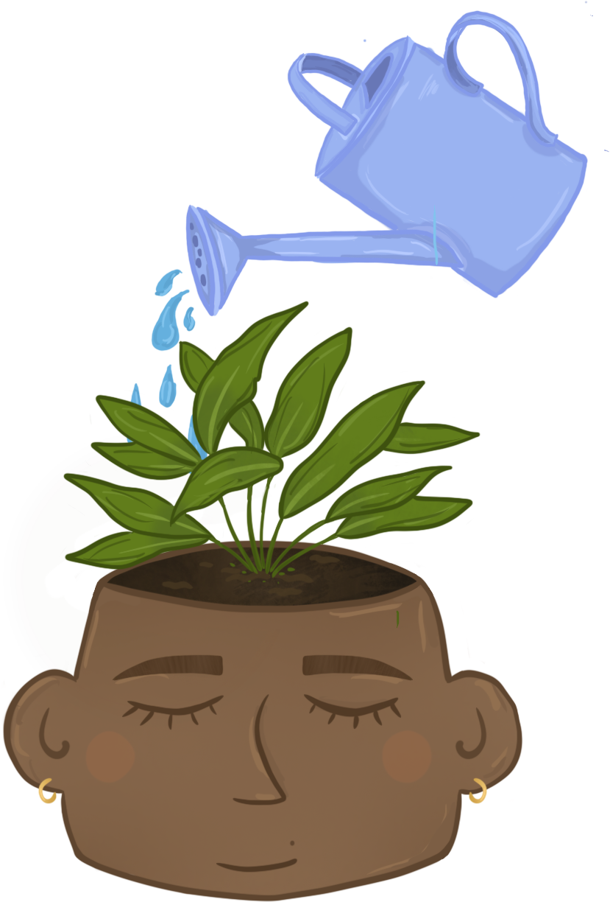

Duurzaam zijn
Hier hebben we een paar snelle tips om voor jezelf na te denken hoe je duurzamer kan leven.
Duurzame tips
Duurzamer eten?
Wil je duurzamer eten? Koop vooral van je lokale boeren, zoals groente boeren of veeboeren voor je melk, kaas, eieren en boter en bij lokale slagerijen/visserijen voor je proteïnes. Of kijk in de supermarkt vaker waar producten vandaan komen, komen ze uit landen in de buurt of uit landen heel ver, waardoor er een grotere afstand is afgelegd en dus meer uitstoting van afvalstoffen. Je kan ook vaker biologische producten kopen, let dan goed op de bio-keurmerken.
Eigen moestuin
Vind je het leuk om buiten te zijn of in de tuin te werken? Begin met je eigen moestuin, met bijvoorbeeld als eerste stap een paar tuinkruiden. Je kan je ook aanmelden bij een collectieve moestuin of klein beginnen op je balkon.
Recyclen
Heb je veel spullen in huis waar je niks mee doet? Gooi het niet weg! Lever het in bij je lokale kringloop winkel of vraag in je buurt rond of iemand er nog gebruik van kan maken. Bedenk ook zelf; kan ik hier iets anders van maken of het opknappen voor een nieuwe kans?
Water besparen
Wil je meer water besparen? Neem kortere douches! Voor elke minuut dat je minder doucht, bespaar je gemiddeld 10 liter water. Met die hoeveelheid water kan je wel 50 kopjes thee zetten ;).
Zonnenpanelen
Al eens nagedacht om zonnepanelen aan te schaffen? Door te besparen op elektra heb je binnen 6 tot 7 jaar je aankoop terug gewonnen.
Zelf composteren
Gooi de schillen van je groente, fruit, eierschalen, koffiedrab en ander organisch afval niet weg in de afvalzak, maar in een compostvat. Of je een tuin hebt of niet, door te composteren kan je zelf vruchtbare potgrond produceren, dat 100% natuurlijk is en gratis. Je vermindert ook nog je prullenbak met 30%
Minder vlees eten?
Wil je nog meer water besparen? Denk er eens een keer aan om minder vlees te eten, al is het 1 keer in de week. Met één hele week geen vlees eten bespaar je al 130 liter water. Veehouderij gebruikt heel veel water voor de irrigatie voor de productie van veevoer en de productie van je dagelijkse portie vlees.